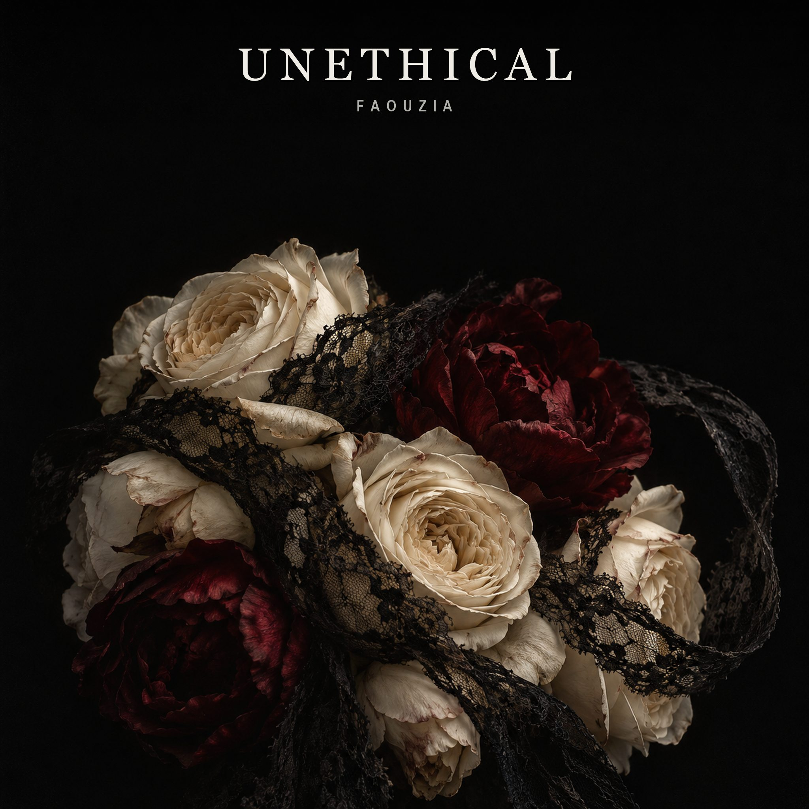
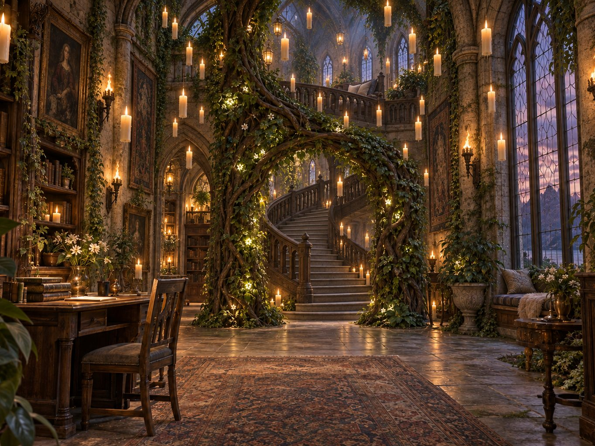

Criss Binoi · AI for Design
Designing between feeling and place.
Two experiments in atmosphere: a dark romantic album cover and a magical interior built from light, stone, books, and growing things.
Tap the background to grow a flower. Every third tap adds a tiny bee.
Selected work · 2026
Two worlds, one love of atmosphere.

01
Album cover · Visual identity
UNETHICAL
A dark floral still life about beauty, control, and emotional tension.
See the project
02
3D environment · Spatial storytelling
The Greenhouse Sanctuary
A fantasy library and conservatory shaped by books, candlelight, and living architecture.
Enter the spaceAbout
I am Criss Binoi, a designer exploring how AI can help turn a feeling into a visual world. I use iteration to move from a first idea toward a clearer mood, story, and experience.